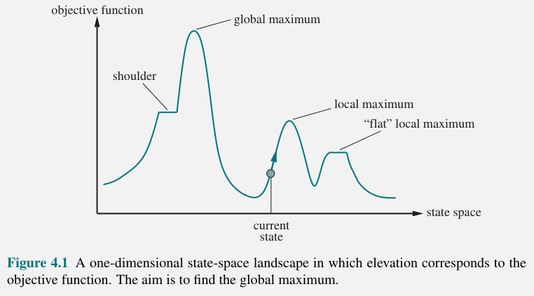
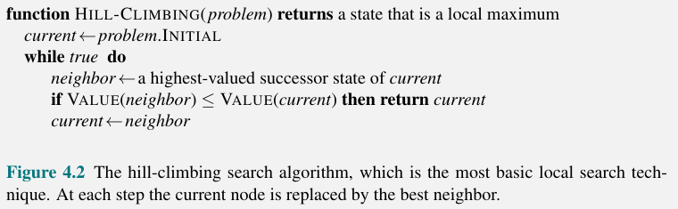
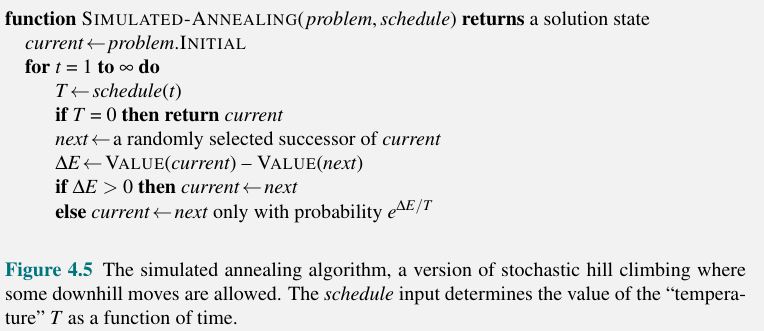
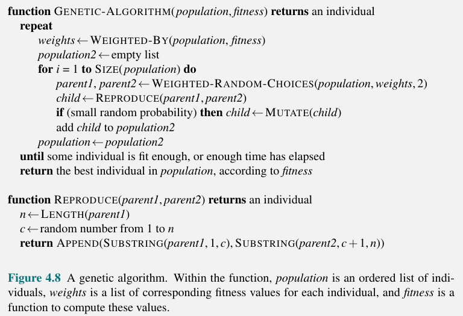

This section deals with the problems of finding a good state without worrying about the path to get there. It covers the following topics:
Conversely to Chapter 3, this section will be focusing on the final state in a problem instead of the path to get there.
Local search looks at a start state and its neighboring states without keeping track of paths and the set of reached states. They are not systematic, meaning they may never explore a region of the space that contains the solution. Local search however offers 2 advantages:
Local search algorithms can also solve optimization problems, in which they attempt to find a best state according to some objective function. This is similar to minimizing a loss function in machine learning.

Figure 1. An example 1 dimensional state-space.
Consider Figure 1 above. The x-axis represents some possible states in continuous space while the y-axis represents the objective function value at that state. The goal of local search here can be one of two things:
Here is pseudocode for implementing basic hill climbing local search. Evaluate the neighbors of the current state until the current state has the maximum of the evaluation function compared to all neighbors.

Figure 2. Pseudocode for the simple hill-climbing algorithm.
Figure 2 above shows the Hill-Climbing algorithm. The algorithm terminates when it reaches a peak where no neighbors have a higher value. It does not look ahead beyond the immediate neighbors of the current state.
Hill climbing is sometimes called greedy local search because it moves to a neighbor state without thinking ahead of where to go next. Greedy algorithms often perform well, but they can get stuck for any of the following reasons:
Figure 3. Illustration of the ridge problem.
The book suggests that to solve more problems, we can allow the local search to keep going when we reach a plateau in the hope that the plateau is really a shoulder. However, if we truly are on a flat local maxima, then we can limit the number of consecutive sideways moves to $100$ for example.
There are several variants of hill climbing:
The success of hill climbing is very dependent on the shape of the state-space landscape.
Hill climbing that never makes downhill moves is vulnerable to getting stuck at local maximas, while the purely random walks will find the global max, but will be very inefficient. An algorithm exists that attempts to combine both hill climbing and a random walk to yield both efficiency and completeness. This algorithm is known as simulated annealing
Annealing is the process of heating metals with high temperature and then gradually cooling them. To explain simulated annealing, think of a state-space that contains many crevices and our goal is to get a ball in the deepest crevice. Instead of a hill climbing problem, this is now a gradient descent problem.
The idea of simulated annealing is to shake this state-space at some starting magnitude and then gradually reduce this magnitude. When we shake the state-space enough, we should be dislodging the ball out of local minimas and not the global minima.
Figure 4 below shows the pseudocode for the simulated annealing algorithm.

Figure 4. Pseudocode for implementing simulated annealing where the task is minimizing the objective function.
Instead of keeping just one node in memory, Local Beam Search keeps track of $k$ states rather than just one. Beginning with $k$ randomly generated states. At each step, all the successors of all $k$ states are generated. If any one is a goal, the algorithm halts. Otherwise,it selects the $k$ best successors from the complete list and repeats.
This may seem like random-restart search running in parallel, but instead this algorithm passes information over to the other search threads to tell them that their search may be better than the current threads search. This allows for "unfruitful" searches to be abandoned and move its search over to the area of the state-space that has more progress potential.
Local beam search can suffer from a lack of diversity when the $k$ states get clustered in a small region of the state space. A variant called stochastic beam search, which is analogous to stochastic hill climbing** can be used to alleviate this problem. Instead of using the top $k$ successors, stochastic beam search chooses successors with probability proportional to the successor's value, thus increasing diversity.
Evolutionary Algorithms are variants of stochastic beam search. Motivated by the metaphor of natural selection, these algorithms use a population of states, in which the "fittest" (highest value) individuals produce offspring (successor states) that populate the next generation of the population. This process is called recombination.
The following terms are related to evolutionary algorithms:
Genetic algorithms add to stochastic beam search with the crossover operation. Figure 5 below shows the pseudocode for implementing a genetic algorithm.

Figure 5. Pseudocode for implementing a genetic algorithm.
We discuss techniques for local search in continuous spaces in this section. The book uses an example where we want to minimize the distance from each city in Romania to the closest of three airports. This problem is a six-dimensional problem because there are six coordinates: $(x_1, y_1), (x_2, y_2), (x_3, y_3)$. The evaulation function for this problem can then be defined by:
$$ f(\textbf{x}) = f(x_1, y_1, x_2, y_2, x_3, y_3) = \sum_{i = 1}^{3} \sum_{c \in C_i} (x_i - x_c)^2 + (y_i - y_x)^2 $$
In cases of continuous states, it is often a good idea to discretize the state space. In this example, every time we obtain a new set of cities, we have to recompute the evaluation function each state and its infinite successors in the 2D state. Instead of allowing a state to be any combination of $(x, y)$ in the continuous two-dimensional space, we could limit them to a rectangular grid with spacing of size $\delta$. Then when we compute our evaluation function, instead of computing this for the infinite number of successors to a state, a single state only has 12 successors corresponding to incrementing one of the 6 variables by $\pm \delta$.
As an alternative to the grid method, we could make the branching factor finite by only sampling a few successor states randomly, moving in a random direction by a small amount, $\delta$. Methods that measure the progress by the change in the value of the objective function between two nearby points are called empirical gradient methods. Empirical gradient search is the same as steepest-ascent hill climbing. Reducing $\delta$ over time can give a more accurate solution, but does not always converge to a global optimum in the limit.
In order to use calculus to solve a problem analytically rather than empirically, we can use the gradient of the landscape to find a maximum. The gradient of the objective function is a vector $\nabla f$ that gives the magnitude and direction of the steepest slope. The gradient of our problem is
$$ \nabla f = \left( \frac{\partial f}{\partial x_1}, \frac{\partial f}{\partial y_1}, \frac{\partial f}{\partial x_2}, \frac{\partial f}{\partial y_2}, \frac{\partial f}{\partial x_3}, \frac{\partial f}{\partial y_3}, \right) $$
In some cases, we can find a maximum by solving the equation $\nabla f = 0$. However, in most cases this equation cannot be solved in closed form.
We can perform steepest-ascent hill climbing by updating the current state according to the formula
$$ \textbf{x} \leftarrow \textbf{x} + \alpha \nabla f(\textbf{x}) $$ where $\alpha$ is a small constant representing the step size. When $\alpha$ is too small, too many steps are needed and it can fall into a less optimal local minima, whereas when $\alpha$ is too big, it could overshoot the global minima. Line Search tries to fix this dilemma by extending the current gradient direction until $f$ begins to decrease again.
For many problems, an effective algorithm is the Newton-Raphson method. This is a technique for finding roots of functions (solving equations in the form $g(x) = 0$). It uses newton's formula to compute a new estimate for the root $x$: $$ x \leftarrow x - \frac{g(x)}{g'(x)} $$
To find a maximum or minimum of $f$, we need to find $\textbf{x}$ such that the gradient is a zero vector $\nabla f(\textbf{x}) = 0$ Thus we can rewrite the above newton's formula as: $$ \textbf{x} \leftarrow \textbf{x} - \textbf{H}_{f}^{-1} (\textbf{x}) \nabla f(\textbf{x}) $$
Where $\textbf{H}_f(\textbf{x})$ is the Hessian matrix of second derivatives. The elements of the Hessian are given by:
$$ H_{ij} = \frac{\partial^2 f}{\partial x_i \partial x_j} $$
For high dimensional problems, computing the $n^2$ entries of the Hessian and inverting it is often expensive, so there have been approximation methods developed for the Newton-Raphson method.
Just like discrete spaces, continuous state space searches suffer from local maxima/minima, ridges, and plateaus. Random restarts and simulated annealing can often help.